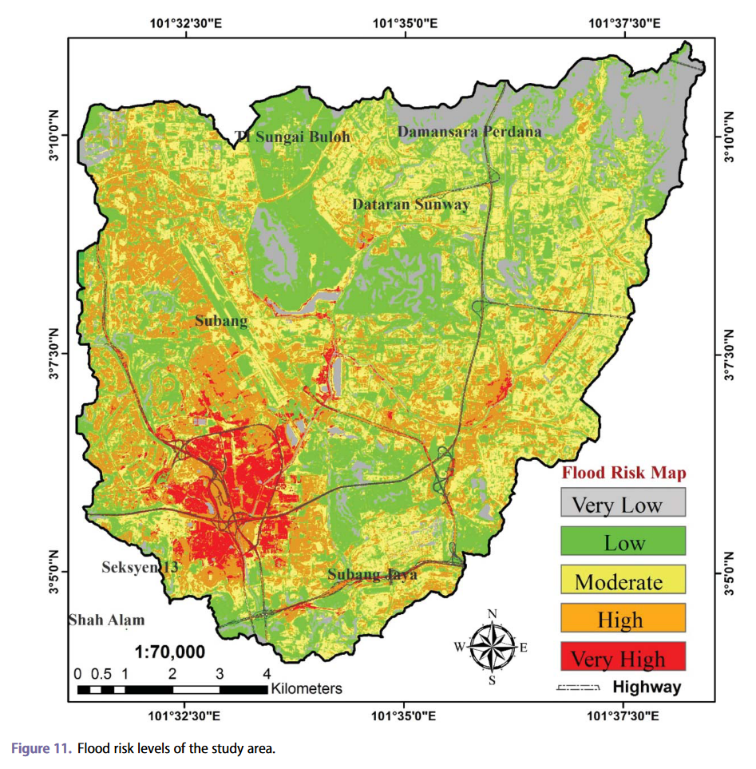

6 Classification
6.1 Summary
What is image classification?
The purpose of classification is to transform a raster of remote sensing spectral data into a meaningful set of categories, to aid interpretation and usability. A common example is the development of land use/land cover (LULC) maps, which distinguish between features such as water, vegetation, bare soil, and built environment.
How does it work?
Image classification methods can be broken down into three broad types, summarised in the table below.
| Method | Example | Details |
|---|---|---|
| Unsupervised (pixel-based) | K-means clustering; ISODATA | Algorithm groups pixels into a specified number of clusters, which must then be manually classified based on their features. |
| Supervised (pixel-based) | Maximum likelihood, Minimum distance, Principal components analysis (PCA), Support vector machine (SVM) | Involves training and testing sets. Train the model on data labelled with desired categories, and then apply the model to a new image/dataset to classify. |
| Object identification | Object based image analysis (OBIA) | As opposed to pixel-based, seeks to combine groups of pixels into discrete objects. My involve input statistics such as shape, texture, context, and spectral signature. At high spatial resolutions, OBIA generally outperforms pixel-based classification, as it accounts for both spectral and contextual information. |
It is also possible to define between a hard or fuzzy logic for per-pixel classification. Hard classification produces singular, discrete values for each pixel (e.g. a pixel that contains a combination of forest and water will be classified solely as one or the other, depending on the method). Fuzzy classification is an attempt to better represent the heterogeneous nature of the real-world being observed. Instead of being assigned to a single discrete class, each pixel is given an estimate of the proportion of each land-cover type found within it (e.g. 20% water, 70% forest, 10% scrub/grassland) (Jensen 2015 , Ch.9). The concept of fuzzy classification and sub-pixel analysis is discussed further in Chapter 7.
Give us an example
The Iterative Self-Organising Data Analysis Technique (ISODATA) is an extension of k-means clustering analysis, a form of unsupervised classification. Key modifications include combining clusters that are too ‘close together’ in the dimensional feature space, and applying rules for splitting single clusters into two.
| Parameter | Description |
|---|---|
| \(C_{max}\) | Maximum number of clusters |
| \(T\) | Maximum % pixels whose class values can remain the same between iterations |
| \(M\) | Maximum number of times the algorithm iterates through classifying pixels and recalculating cluster mean vectors. |
| Min. members | Minimum % of members in a cluster. Clusters below this threshold are deleted and the members assigned to alternative clusters. |
| Min. distance | Minimum separation distance between cluster means. Clusters with a separation distance below this threshold are merged. |
| \(\sigma_{max}\) | Determines when a cluster is split into two. |
6.2 Application
Supervised classification for disaster risk assessment
A key component of disaster management and resilience is identifying areas at greatest risk of damage - where risk is a function of both hazard (the likelihood of disaster affecting the area) and vulnerability (the loss or damage an area would suffer in the event of disaster). Remote sensing data combined with classification tools can be used to develop risk maps in diverse settings. For example, support vector machines (SVMs), have been applied in flood settings in Malaysia by Tehrany et al. (2014) and Mojadaddi et al. (2017).
In each case, a set of parameters are standardised and form the inputs for the SVM, and the output being a ‘flooded’ or ‘non-flooded’ label for each pixel/observation. The SVM ‘hyperplane’ is then optimised to find the greatest separation amongst the data while minimising the number of misclassification errors (Pal and Mather 2005). From this, a hazard map can be built that estimates the probability of flood in a certain pixel given the value of the input parameters. The final output of each study is a map where each pixel or raster cell has a single value indicating the risk indice.

6.3 Reflection
I found support vector machines the heftiest conceptual challenge for this week. At first sight, terminology such as hyperplanes and support vectors is intimidating to absorb within a fast-paced lecture, but I found the resources such as Srivastava’s Support Vector Machines article on Medium, and Pal and Mather’s article Support vector machines for classification in remote sensing (2005) useful to flesh out the concept and break down the complexity. Further, seeing how the method can be applied in context (as described above) gave me a better sense of the rationale behind the method and how it adapts from other machine learning classification methods.